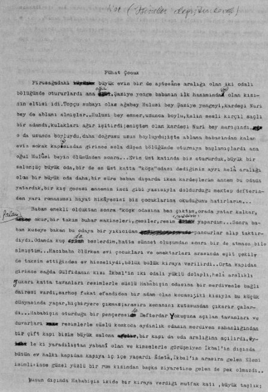

Firuzağa’daki büyük evin bir de aptesâne aralığı olan iki odalı bölüğünde otururlardı ana oğul. Şadiye Yenge[39] babamın ilk hanımından olan kızının eltisi idi. Topçu subayı olan ağabey Hulûsi Bey Şadiye Yenge’yi, kardeşi Nuri Bey de ablamı almışlar. Hulusi Bey esmer, uzunca boylu, kalın sesli, kırçıl saçlı bir adamdı, kulakları ağır işitirdi; eniştem olan kardeşi Nuri Bey sarışındı, o da uzunca boyluydu, daha doğrusu uzun boyluydu; işte ablama büyük babasından kalan evin sokak kapısından girince sola düşen bölüğünde oturmaya başlamışlardı ana oğul, Hulusi Bey’in ölümünden sonra... Evin üst katında biz otururduk, büyük bir salon; üç büyük oda, bir de en üst katta “köşk” odası dediğimiz ayrı hela aralığı olan bir büyük oda daha, bir süre babam dışarda iken kardeşlerim annem bu odada yatardık, bir kış gecesi annemin inci gibi yazısıyla doldurduğu mektep defterinden yarı romanımsı hayat hikâyesini biz çocuklarına okuduğunu hatırlarım...
Babam emekli olduktan sonra “köşk ”odasına ben çıktım, orada yatar kalkar, kitap falan okur, bir takım buhar makineleri, gemiler, resim mesim yapardım... Sonra babam kuzeye bakan bu odaya bir yıkıcıdan pancurlar alıp taktırdıydı. Odamda kuş da beslerdim, hatta sünnet oluşumdan sonra bir de atmaca bile almıştım. Hacı Baba ölürken evi çocukları ve emektarları arasında eşit şekilde taksim ettiğinden ev hisseliydi, bölük bölük kiraya verilirdi. Orta kapıdan girince sağda Gülfidan’ın kızı İkbal’in iki odalı yüklü dolaplı, hela aralıklı yukarı katta tavanları resimlerle süslü Habâbiş’in[40] odasına bir merdivenle bağlı dairesi vardı; sarhoş, fakat efendiden bir adam olan kocası; iki kızıyla bu küçük dünyasında yaşar, hiçbir yere çıkmaz; ara sıra kemanını kutusundan çıkarır çalardı. Habâbiş’in oturduğu bir penceresi de Defterdar Yokuşu’na açılan tavanları ve duvarları resimlerle süslü koskoca aydınlık odanın merdiven sahanlığından bir çift kapı bizim büyük salona, bir kapı oda aralığına açılırdı, öyle ki yaradılıştan yabani olan ve kimselerle görüşmiyen İkbal’in dışında bütün ev halkı kapıdan kapıya iç içe yaşardı adeta, İkbal’in ara sıra gelen Eleni isimli ince güzel yüzlü bir Rum kızından başka ziyaretine gelen de pek olmazdı...
Bunun dışında Habâbiş’in ikide bir kiraya verdiği mutfak katı, büyük taşlık; musandıralı oda vardı, bahçede de yine Habâbiş’in hissesi olan, altında ahırı uşak odası... Hamam kullanılmadığı için (Gülfidan’ın kapı yoldaşı) Nergiz oraya eşyalarını koyardı kapı değiştirdikçe.[41] Uşak odasında bir süre iki çocuğu sakat, üçü sağlam, doğru dürüst konuşamıyan, Naime Hanım adında bir kadıncağız oturduydu.
Çok kibar bir ailenin kızıymış söylendiğine göre; konaklarda büyümüş dadılar tayalarla; sonra düşmüşler nasılsa. Bacakları tutmıyan sakat bir oğlu, bir de yerlerde sürünerek dolaşabilen koskoca kızı vardı; ikisi erkek biri kız öteki üç çocuğu normaldi, büyük kız çirkin yüzlüydü ama çok biçimli bir vücudu vardı; o kadar fakirliğin ortasında o zamanın modasını kaçırmaz, giyinir kuşanır, gezer tozar, şöyle böyle derlerdi. Onun küçüğü Muhsin benim arkadaşımdı, çok terbiyeli çalışkan bir çocuktu, beraber yangın yerlerinde şurda burda dolaşır, çenber çevirir, kertenkele, kuş avlardık. Daha sonra Faziletler oturduydu orda, annesi iki kız kardeşi bir de erkek kardeşiyle... Fazilet kız kardeşimin arkadaşıydı, fıkır fıkır kuşdili konuşur gülüşürlerdi, pek merak ederdim ne konuştuklarını; Fazileti her görüşümde yüreğim şöyle bir çarpardı. Sonra veremden, bakımsızlıktan ölmüş Faziletçik. Ev eskidikçe yol geçen hanına dönmüştü adeta; en sonra karısı her sene aşağı yukarı doğuran, burnunun ucunda her zaman billur damlası gibi bir nezle damlası sallanan iskelet kadar zayıf bir laz taşındı çoluk çocuğuyla. O sıralar “ev”in nizamı artık bozulmuş, bahçe duvarları yer yer yıkılmış, ağaçlar yer yer yozlaşmıya koyulmuşlardı bile. Lazlar bahçenin bir kısmına tel çekip öteberi, zerzevat yetiştirmiye başlamışlardı. Bir gün bahçenin bir tarafında içinde İkbal’in anası Gülfidan’ın yaşadığı limonluk kendi kendine çöküverdiydi. Gülfidan çoktan Bakırköy Hastanesi’ne gittiğinden kimseye bir şey olmadı. Sonra bir süre senede iki kere doğuran, kabak yavrularını oturup afiyetle yiyen evin kedisi Minnoş barındı yıkıntı içinde, limonluğun önünde upuzun yatan koskoca ceviz kütükleri kimse kıymetlerini bilmeden yıllarca; ev yıkıcıya verilinceye kadar yerlerinde kaldılar. Bahçe, ev; içindekilerle beraber yaşlanıyor, biz de çocukluktan gençliğe geçiyorduk. Bu kadar çeşitli insanın yaşadığı bu yerde herkes gül gibi geçinir giderdi kendi halinde; herkes aşağı yukarı fakirdi, belki içlerinde en hali vakti yerinde olan babam subay ve hayatta olduğundan bizdik. Habâbiş ara sıra sandığından çıkardığı mecidiyeleri bozdurur; Gülfidan’ın kızına çocuklarına bir kısmını sarf eder, Şadiye Yenge oğluna ayırdığı günde yirmi beş kuruşun dışında kocasının emekli maaşını üstüne nerelere verileceği evvelden yazılmış zarflara koyar; ayın sonunu getirmeğe çalışırdı... Annem babamın Aksaray’daki evi satarak Bursa Sokağı’nda harabe halinde alarak tamir ettirdiği apartmandan alınan kiraları günü gününe banka borcuna yatırırdı. Babam emekli olup İstanbul’a dönene kadar borç aşağı yukarı bitmişti; bütün asker emeklileri gibi ticaret hayatına atılmak isteyen babam sonunda iflas etmiş, annemin o kadar emek ve acıyla adeta yeniden meydana getirdiği apartıman satılmıştı yok pahasına. En küçük kardeşim daha okula gitmiyordu galiba. Kız kardeşim İtalyan ilkokuluna; ben de Galatasaray’a gidiyordum, Ahmet Ağa’nın tamburunu evden işitip fırladığım olurdu bazen; o zaman mektebe gitmekten vaz geçer, Allah’a sığınıp frenklerin “école buissonniere” dedikleri mektep kaçkınlığı ederdim, ondan sonra velim’den bir mazeret kâğıdı koparıp Mikado Sait’in (Sait Hoca) karşısına çıkmamanın çarelerini arardım. Bu mektepten kaçmalar hâlâ tadı damağımda kalmış, ömrümün en güzel zamanlarıdır. Bir keresinde Sakallı’nın (Mr. Guillollot) fizik imtihanına girmemek için 735 Ferda, 625 Hüseyin, 1119 Nuri, 1414 Reştan, 1418 Arap Vedat, ben; o gün hasta olduğumuza dair Beşiktaş’ta bakkal dükkânında oturan Rum doktordan birer lira verip raporlarımızı aldıktan sonra başımızı alıp orda burda dolaşmış, sonra o sıra daha yanmamış olan Adliye Sarayı’nda en ön sırada Ağır Ceza’da çok sanıklı bir cinayet davası da dinlemiştik. İki gün sonra Sait Bey hepimizi birden çağırıp imtihan günü nerede olduğumuzu sormuştu: – Rapor aldık, raporumuz var efendim! dedik göğsümüzü gere gere; Sait Bey de çekmecesini açıp bize imtihan gününün tarihini taşıyan Cumhuriyet Gazetesi’ni burnumuza tutmuştu; hepimiz en ön sırada yan yana oturmuş, sanki fotoğrafçıda fotoğraf çektiriyormuşuz gibi, tam netlik içinde sebilhane bardağı gibi sıralanmıştık, fotoğraf muhabirinin sanıkların resimlerinin alırken çektiği şekilde.
Sühat Çocuk İstanbul Lisesi’ne gidiyordu o sıralar, artık yakışıklı bir genç olmuştu, o çağların gönüller fatihi Rudolf Valentino’suna benzetirdi kendini; benzerdi de ayrıca. Doğuştan dalgalı saçlarını düz tutmak için başına geçirdiği bir filesi vardı; filesi başında odasının bahçeye bakan penceresinin önüne oturur; aynasını cama dayar, kaşlarını almıya başlardı; günün belirli saatlerinde, eve gelenler pencerenin önünde kaşlarının alırken görürlerdi onu. Arkadaşların ödüm kopardı bu manzarayı görmelerinden; onun için Suat Ağabey kaşlarını aldığı saatlerde gelmelerini istemezdim bizim eve; ama bir iki kere görmüşler: – Ulan dediler, bana; o akraban olacak herif ne biçim herif be; şey midir nedir? İleri geri laf edenler de bulunurdu zaten Sühat Çocuk için; hatta bir gün lafını esirgemez bir Çerkes olan anneannem: – Aman Suat sen de, kaşlarını da almak ne demek öyle; hamam oğlanı gibi! dedi çıktıydı işin içinden. Şadiye Yenge üzüldü, büzüldü: – Aman Haminne (Hanım Nine) ne biçim laf bu; büle (böyle) de şey söylenir mi? diye karşı çıktıydı! Oysaki dünyanın en iyi insanı olan bu artık “nesli” tükenmiş Türk anasının, o ana kadar hiçbir şeye karşı çıktığını görmemiştim ben; dünyada ondan daha saf, ondan daha temiz yürekli bir insan görmedim diyebilirim. Bir gün, yenge diye seslenmiştim, limana bakan merdiven penceresinden dışarıya bakıp, “Yavuz yelkenlerini açmış, çala kürek geliyor bak; koş gel de gör! Hemen mutfak gibi kullandığı yerden koşa koşa gelip bakmıştı, sonra anladı: – Seni yumurcak seni! demişti, hiç Yavuz’un yelkeni mi olurmuş; aldattın beni, alacağın olsun! Sühat Çocuk bazı akşamlar gecikirdi; yengem yemekleri mangalın kenarına sıralar, yokuşa bakan pencereye geçer, artık yolunu gözlerdi Sühat’ının, isterse gece yarısı gelsin, onun yemeklere elini sürmek aklına gelmez; bir hasisin parasını sevmesi, kedinin yavrusunu sevmesi, kumarbazın kumarı sevmesi sönük kalırdı Şadiye Yenge’nin evladını sevmesinin yanında.
Etraftaki bütün Rum kızları âşıktı Suat Ağabeylerine, hatta dikilecek öteberiyi bizim eve getirmek için birbirleriyle kavga etmişlerdir her halde. Bir keresinde terziden iş getiren kızlardan birine annem 20 kuruş bahşiş verince Sühat Çocuk da oradaydı, pek bozulmuştu hatırlarım.
Sühat Çocuk (annesi böyle derdi) Tıbbiye’nin ikisinde sınıfta kaldı; çok ağladı, yengem de çok ağladı, ama göstermedi ağlayışını oğluna, bizimle olduğu zaman ağlardı. Ayda kuruş kuruş harcanan belirli küçücük bütçesi olan aile için onun sınıfta kalması bir felaket olmuştu çünkü. Ben de sınıfta kalmıştım tesadüfen o yıl; orta yedide. Ben de burnumu çeke çeke ağladım, ama Suat Ağabey hıçkıra hıçkıra ağlamıştı hiç unutmam. O sıralar İstanbul’un yıldızının parladığı son çağlardı; etraftan “Süfelâ-yı Lâyuflihûn” akını başlamamıştı daha, koca kentin insan sayısı bir milyon bile yoktu belki de; mahalle aralarında, sokaklarda dana kadar herifler plastik topları onun bunun kafasına atarak top oynamazlardı, yalnız Cihangir’de hâlâ duran Ege Bahçesi’nin dışında bir kaç aile bahçesi daha vardı, müzikli müziksiz çeşit çeşittiler, bunlardan birisine de Naşit’in bütün kumpanyasıyla gelip oynadığını anımsarım, bale heyetinde yüzü bebek yüzü gibi, kumral kırpık bıyıklı, bacakları başkasının bacaklarıymış gibi kısacık birisinin ötekilerle beraber zeybek oyunu oynamıya çalışması gözlerimin önündedir.
Boğazdaki yalılar ayaktaydılar daha, üzerlerinden Kerkük Canavarı’nın[42] silindiri geçmemişti, ahşap mahallelerde pencere cumbalarında çiçek saksıları görünürdü, Hemşinli Laz’ın daha el atmadığı, Menderes’in milyoner yaratma ekonomisinin arsa spekülasyonuna daha dönüştüremediği evlerin bahçe duvarlarından hanımelleri, leylaklar sarkar; sokaklar mis gibi çiçek kokardı. Akşamları Ege Bahçesi’nin önündeki yolda arkadaşlarla gezintiye çıkar, Rum kızlarına laf atardık, içlerinde Rebeka isimli bir tanesi pek hoşuma gider, ama bir türlü konuşmıya cesaret edemezdim, ama yine de ufak tefek zamparalıklarım olurdu ara sıra; bir ara karşı apartımandaki Rozali ve kardeşi Benita ile işaretleşirdik, erkek kardeşleri pişkin Rum oğlanı zevk alırdı adeta bu masum oynaşmadan. Benita tay bacaklı afacan bir kızdı, on iki on üç yaşlarındaydı ancak; ablası Rosalie idi benim sevgilim daha ziyade, onunla pencereden pencereye işaretleşirdik; ben ona pek de güzel olmıyan sesimle şarkılar söyledim, Atina’ya gittiği bir tatil dönüşünde “Rosalie, elle est partie; si tu la vois, raméne la moi” diye; hatta bir keresinde karşı evin Arap kalfası adamakıllı kızdı bu hale: – Ayıp değil mi ayol, diye çıkıştı bana karşı balkondan; sen bir Türk çocuğusun Rum kızına nedir bu şarkı söylemeler böyle bakayım, gelip söylerim annene bak karışmam haaa! demişti.
Bir seferinde de Ege apartımanında oturan Semiha’ya yakmıştım abayı akşam karanlığında çıkardık, kuytu köşelerde acemi acemi sıkıştırırdım kızcağızı… Bir akşam karanlıkta onu seven bir Kulelili çocuk kıstırdı bizi, belinden palaskasını çekip saldırdı üstüme, ben de saldırdım tekme yumruk, Semiha ayırdı bizi güç halle, ama biz kavgaya doyamıyorduk, ben avazım çıktığı kadar Semiha’ya: – Sen eve kaç; diye bağırıyordum. Kim kimi dövdü anlaşılamadı ama bir hayli kavga ettikti o tanımadığım çocukla…
Bir gün Semiha ablasının evinde vereceği partiye benim de gitmem için bana haber göndermiş Piç Cihat’la; ben gitmedim, kalabalıktan hoşlanmazdım, ama kız benim o kavga yüzünden kızıp partisine gitmediğimi sanmış, tutmuş tentürdiyot içmiş; midesini yıkamışlar kurtuldu. Bir süre sonra birbirimizi kaybettik, ben dazlak kafalı, göbekli bir adam olduktan sonra gördüm bir gün Beyoğlu’nda onu, koskoca kadın olmuştu; yanında başkaları vardı, konuşamadık, göz göze bakışıp geçip gittik. Yüreğimin boyun damarımda atışını dinledim bir süre arkasından bakarak.
* * *
Kardeşimle benim sünnet düğünümde büyük salona kukla perdesi kurulmuştu, Suat Ağabeyisinin perdenin arkasında kız kardeşimin yanağını okşadığını görmüştüm siluet olarak. Ondan sonra akşam bizim katta toplanıp konuşmalar bir işkence olmuştu benim için; Suat Ağabeyin her sözü, her hareketi sinirime dokunmaya başlamıştı. Zaten o günlerde bir kız kardeşi, hele dünya güzeli bir kız kardeşi olmaktan daha büyük bir felaket olamazdı benim gibi utangaç, içine kapalı bir çocuk için. Beşinci sınıfta iken ismini hatırlayamadığım bir çocuk[43]flört ediyor diye kızkardeşini vurmuştu! Eve gelen arkadaşlarımın kız kardeşimi görmelerinden ödüm kopardı nedense.
Suat Ağabeyisi müthiş zamparaydı, hakkıydı da bu zamparalık, Rudolf Valentino kadar yakışıklıydı çünkü; yüzünü kremler pudralarla pudralar, kırık aynanın karşısına geçer, kaşlarını almaya başlar; akşama doğru ise son modaya uygun elbiselerini giyip piyasaya çıkardı. O zaman arkadaşlarıyla nerelere giderlerdi bilemem, ama her halde lüks olmayan ama kendine göre bir kalitesi olan yerlere giderlerdi her halde. Ben kendisini Sıraselviler’de tatlısu frengi bir Fransız kadınıyla beraber gördüm bir kaç sefer, Antoinette’miş adı sonradan öğrendik. Arkadaşlarından bir doktor vardı, iri yarı; çok varlıklı kodaman birisiymiş; ara sıra gelir alır giderdi Suat Ağabeyi.
Çok ciddi mesleğine ve ailesine çok bağlı bir asker olan eniştem sevmezdi pek ağabeyisinin oğlunu, züppe bulurdu onu, kaşlarını almasınaysa deli olurdu hiddetinden. Kendisi bir ahlâk anıtıydı adeta, hayatımda onun kadar göründüğü gibi, yapmacıksız, kalender, sevgi dolu bir insan görmedim; kaba sabalığının altında pırıl pırıl ipince bir insan ruhu taşırdı. Beyin kanamasından ölüverdi bir gün Anadolu’da vazifesi başında.
Suat Ağabeyisi ayda aldığı yedi buçuk lira harçlığıyla prensler gibi giyinir, İsmail Kemal’den ayakkabılar bile giyerdi. Yengem zarfları karıştırmamak için dikkat eder, küçücük ailenin bütçesini denkleştirmek iki yakalarını bir araya getirmek için Turgot’nun aklını başından alacak marifetler gösterirdi. Sıraselviler’de çalgılı Violette bahçesinde de gördüm bir kaç sefer onu; biz de giderdik oraya benim çocukluk arkadaşım Necati’yle ara sıra, Rıza da gelirdi. Necati’nin arkadaşı; başında Maurice Chevalier hasır şapkası, dudaklarında Maurice Chevalier’nin gülmesi; Rum kızlarını dansa kaldırır (Türk kızları pek çıkmazlardı o zamanlar daha) onlara Maurice Chevalier’nin şarkılarını mırıldanırdı kulaklarına. Sonra Rıza intihar etti, neden kendini öldürdüğü bir türlü anlaşılamadıydı.
İşte hayat böyle yuvarlanıp giderken yengem evlendirdi oğlunu nihayet; Tıbbiye bitmiş, askerlik yapılmış, arkasından hemen evlendirmişti Sühat’ı. Pırıl pırıl yüzlü, göğüsleri birbirine yakın ve çok yüksekte bir kızdı oğluna aldığı gelin. Dalgalı bir denizde günlerce süren bir çabadan sonra ayakları kuma değen bir insan gibi yüzünden büyük bir sevinç okunuyordu; her zaman yavrusunu ensesinden tutup en emniyetli yerlere taşımaya çalışan ana kedi, yavrusunun mürüvvetini de gördü.
Haydarpaşa’da bir eve taşındılar, iki çocuğu oldu Suat Ağabeyin, ikisi de kız. Ara sıra görüyordum onları. Sonra akrabası bir mimara Haydarpaşa’da aldığı bir arsaya bir ev yaptırdığını duydum, fakat gidip göremedim. Bütün gençliği yoksulluk içinde geçmiş olan Sühat Çocuğun eli biraz “sıkıydı”, eli çok açık olduğu söylenen karısıyla da o yüzden ayrıldılar senelerce sonra her halde, ayrıldıktan, başka bir kadınla evlendikten sonra oğlu; yengem yine gider gelirdi sevgili gelinine. Her zamanki saflığı, içtenliğiyle, bize de gelirdi ara sıra gece yatısına, Firuzağa’da yıkılan evden sonra Cihangir’de ablamın yaptırdığı küçük apartımana. Onu her görüşümde eski günler aklıma gelir; evin en üst katından kış geceleri iple bağlı sürahiyi pencereden indirip sokaktan geçen bozacıdan boza alınması; uzun kış gecelerinde; çini sobanın çıtır çıtır yandığı odada anlatılanları zevkle adeta içer gibi dinlediğimi sanırım... Suat Ağabeysiyle elimize babalarımızın kılıçlarını alıp merdivenlerden gümbür gümbür ine çıka, koşa atlıya Pardayyanlar gibi kılıç oynayışlarımız gelir gözümün önüne hep. Yengem bir türlü oğlunun adını söyliyemez, kesik kesik Rumeli şivesiyle Sühat derdi ona; Sühat aşağı Sühat yukarı. Dünyası Sühat’la örülmüş bir dünyaydı Şadiye Yenge’nin; onun için beş yaşında da, yirmi beş yaşında da, yüz yaşında da olsa Sühat Çocuk – Sühat Çocuk’tu!
Suat Ağabeyisi ilk karısından boşandıktan sonra hemen yeniden evlendi, benim kuzenimin sınıf arkadaşıydı bu sefer evlendiği kız. Ben Ankara’da yıllarca kaldım, sonra Fransa’ya gittim, senelerce görmedim onları, döndüğümde tosun gibi bir oğlu vardı Suat Ağabeyisinin, Taylan koymuşlar adını. Artık ben de İstanbul’a yerleştiğimden daha sık görüyordum onları, yani bayramdan bayrama; yahut ona yakın bir şey! İlk gördüğümde Taylan küçük bir çocuktu, şişmandı da üstelik, oysa ki babası hâlâ yirmi beş yaşındaki kadar değilse bile yaşından umulmıyacak kadar korumuştu formunu, yine iyi giyiniyordu, eli de hayli para görüyordu, ama sıkıydı da; artık eski uçarı çapkın gitmiş, yerine modern kıyafetli; namazında niyazında bir başkası oturmuştu o tahta. Futbol maçlarına da meraklıymış, hatta Haydarpaşa’da bilmem hangi takımda ara sıra futbol da oynuyormuş. Suat Ağabeyisinden duyduğum bütün havadisler bunlar oldu yıllarca. Yengem, sevgililer sevgilisi Şadiye Yenge eski konağın enkazından kurtarılmış parayla meydana gelen apartımana gelir, elini öperdim seve seve, çabuk çabuk Rumeli şivesiyle konuşurdu, konuşması oğlununki gibi haykıra haykıra, o kadar da çabuk değildi, ama bazı lafları yine de zor anlaşılırdı, ama laflarının anladığım kadarı bana yeterdi de artardı bile. Geçmiş eski mutlu günlerden konuşurduk bazen, bana kendisini Yavuz’un nasıl yelken açıp geldiğini söyliyerek aldattığımı anlatırdı. Yemekte eski yer sinisinin yerini tutan masanın başında tabağına yemek konurken eski yoksulluk günlerinin alışkanlığıyla “Aman çok komayın bana, yiyemem” diye küçük feryatlarla yemeğini yerdi. Aynı evde oturduğumuzdan Ablama her gelişinde Şadiye Yenge’yi görüyordum; Haydarpaşa’dan kalkar sanki Amerika’ya gidiyormuş gibi telaşlar içinde vapur otobüs vakitlerini kollıya kollıya Cihangir’e gelir, birkaç gece, tadına doyamadığım bir kaç gece kalır, sonra yine aynı telaş aynı küçük feryatlar içinde geldiği yere dönerdi.
Şadiye Yenge ara sıra çok sevdiği eski gelinine de gider kalırdı, iki kız torununa kocaya varmak kocadan ayrılmak gibi zorlu zamanlarında kocasından kalan maaşından paylar ayırdığı olurdu. Bir gün Şadiye Yenge’nin abdest almak için girdiği banyoda düşüp kalça kemiğini kırdığını söylediler. İlk önce pek önem verilmedi bu habere; ama kalça kemiği kırılan ihtiyarlardan, özellikle Bernard Shaw’dan aklımda kalanlara dayanarak pek beğenmedim doğrusu bu havadisi. Şadiye Yenge’nin kalça kırığı benim korktuğum gibi kötüye döndü; sıcak bir Ağustos ayında gittim ilk kez Haydarpaşa’daki eve, Şadiye Yenge’nin hasta yatağında elini öpmeye; zayıflamıştı adamakıllı, parşömenleşmiş elini öptüm, çizgilerinde gençliğimin anıları, nice emekler, nice güzellikler olan o Ramses’in iskeleti kadar zayıflamış ellerini öptüm. Yerinden kalkamıyordu artık; son derece iyi kalpli gelini hiçbir şikâyet etmeden altını değiştiriyor, dünyasını değiştiren, bu bir başka dünyanın insanı olmuş insana bu dünyadan rahatça gitmesi için en insanca çabaları gösteriyordu. Gözleri hep Sühat Çocuk’taydı. Suat Ağabeyisi ihtisasını yapamamış, hükümet tabipliğinde kalmış. Suat Ağabeyisi, acele acele, haykıra haykıra konuşan, kulakları da artık babası gibi duymayan bir zamanların ünlü jönprömiyesi, Don Juan’ı elinden geleni esirgemiyordu; anasının onun için elinden geleni esirgemediği gibi!
Bir gün öldü nihayet Şadiye Yenge. O zamanlar Gülcemaller, Gülnihaller, gemi güzellerinin, Transilvanyalar gibi bembeyaz kuğuların demir attığı İstanbul Limanına Yavuz’un yelkenlerini açarak girdiğine inanan Şadiye Yenge’nin cenazesine gittim bir gün öğleye doğru Kadıköy Osmanağa Camii’nde; ramazandı... Canımın sıkıntısından fosur fosur sigaralar içerek dolaşıyordum avluda, bir ara elimde sigaram duvara gömülü küçücük bir kitabeye gözüm ilişti, avludaki büyük çınarın kitabesiydi, bu sırada son cemaat mahallinde namaz kılanların bana ters ters baktıklarının farkına vardım; dışarı çıktım, kapının önünde bir piç kurusu bir kafes dolusu saka kuşunu tanesi bir liradan satıyordu; gözlerim yaş içinde yirmi beş kuşun parasını verip Şadiye Yenge’nin ruhu için “azat” ettim... Orada bizim tanıdıklar, yengenin akrabaları, Sühat Çocuk, kızları, hepimiz vardık; son cemaat mahallinde namaz kılanların neden bana ters ters baktıklarını anladım sonra; ramazanda fosur fosur sigara içtiğime kızarlarmış meğerse! Namaz vakti geldi el bağlayıp durduk, yanımdakiler ne yapıyorsa onlar gibi yapıp cenaze namazına durdum. Şadiye Yenge’nin huzurunda; aslında onun için en güzel cenaze namazını ben kıldım, çünkü orada olanların çoğu onu tanımıyorlardı; Osmanağa Camii’nden tabutun altına girip biraz ilerideki cenaze arabasına giderken aklımdan hep o fakirlik içindeki mutlu yıllar geçiyordu... Şadiye Yenge’nin mangal üstünde yemekleri ısıtıp Sühat Çocuğun eve dönmesini gecelerce beklemesi, ihtiyarlarla dolu eski evin odasında, bizim katta Emine Hanım, Habâbiş, annem (o sıra artık anneannem ölmüştü), yengem, Suat Ağabey çini sobada yanan odunların çatırtısını dinliyerek annemin Mişel Zevako, Pardayyanlar, Meç Arkadaşları, daha bilmem neleri, Kontes Saraları anlatırken Cemile Teyze, yengem, aşağı katta oturan ve erkek çocuğu olduğu zaman verilen (tavanda hasta var) parolasına aldırmadan saçık açık hikâyeler anlatan Kör Şerif Hanım, işitmemesine rağmen ağzı bir karış açık annemi dinleyen Sağır Emine Hanım gözlerimin önüne geldi. Gözlerim buğulandı bizi sarsıla sarsıla mezarlığa götüren otobüsün içinde; nihayet Karacaahmet’in yeni açılan bulvar’larından birinin kenarında yüksekçe bir duvarın üstünde kazılmış hazır bekliyen kabire yöneldi kalabalık; kadın taifesi biraz geride; erkekler mezarın başındayız. Elime geçirdiğim kürekle bir kaç kürek attım yükselen tümseğe, her şey bittikten sonra hepimiz yine otobüslere binip döndüktü yine yerlerimize; o tabutun içinde olmamanın gizli sevinci içinde belki de! Suat Ağabey ondan sonra hastalandı işte; evvela karısı sinirlerinin bozulduğundan konuşur oldu bir süre, ama anasının ölümüne üzgünlüğünün doğal sonucu olarak kabul edilen bu hal ümit edildiği gibi geçmedi, sonra bir zaman kulaklarının işitmemesine yoruldu sıkıntısı, sinirliliği. Kulaklarının ağır işitmesinden nedense son derece utanç duyuyordu; ben de bunu anlıyamıyordum bir türlü, bize; yani ablamın evine geldikleri zaman unutuyor, benim söylediklerimi anlıyamıyacağını hiç de düşünmeden normal bir insanla konuşur gibi konuşuyordum.
Aradan zaman geçti, kızları çoktan evlenmiş, bir tanesi hatta yengenin sağlığında kocasından kanlı bıçaklı ayrılır olmuştu, buna da üzüldüğü biliniyordu ayrıca. Onları ilk defa yengenin cenazesinde gördüm, isimlerini ayıramamakla beraber solgun yüzlerine rağmen güzel olduklarını görmüştüm; Suat Ağabey bir yerlerde, galiba Çekmece taraflarında yerden mantar gibi biten o sevimsiz mahallelerden birinde bir de yazlık kat aldı kendine. Sıkı sıkıya yaşamış, harama uçkur çözmiyen bir sofu gibi lüzumsuz hiçbir şeye para harcamamış, yoksul geçen bütün bir ömrün öcünü alırcasına sefa sürmek istermiş gibi sahil yağması spekülatörlerinin ürettiği topluluklardan birinde sevimsiz küçük bir daire. Ama şirazesi bozulmuştu Suat Ağabeyin bir kere, hiçbir şeyden zevk almaz olmuştu artık, ömrünün en güzel çağını İstanbul’un en güzel çağında (bize göre tabii) en güzel şekilde geçirmiş bu adam bitkisel bir hayata girmişti adeta; yarı sağır, üstelik evinde kapalı, üstelik bir merakı da olmayan bir adam, hem de üstelik son iki senesini emekliliğine kadar rapor alarak geçirmişti. Bu sıralarda yine ara sıra görüyordum kendisini. Son görüşlerimden birinde her halde hastalığın yeni başladığı sıralardı Emirgân’daki bir gazinoda yeğenimin nişanında gençlik yıllarını aratmayacak kadar bir dans da ettiydi on sekiz, yirmi yaşında kızlarla, yıldızın parladığı son anlarmış meğer. Bayram kandil ziyaretlerini ihmal etmezlerdi ailenin en büyüğü ablama, tosun gibi genç irisi oğlu, adamakıllı anaçlaşmış karısıyla bir iki kez daha geldiler, oturduk konuştuk; ama artık aradaki bağlar kopmuş, köprülerin altından deryalar kadar sular akmış. O yine yarım yamalak, haykıra haykıra çabuk çabuk konuşuyordu ama konuşması da istekleri de çağımızın gerçekleri olmaktan çıkmıştı.
Sühat Çocuk ölüm’e yine her zamanki gibi formunda yanaştı, daha doğrusu ölüm ona yanaştı denebilir; çünkü onun ölüme yanaşmıya hiç niyeti yoktu; öleceği güne kadar da kabul etmedi; en son gün hariç. Bir sıra uzun zaman göremedim kendisini, sonra bir laflar dolaştı aile arasında, Suat Ağabey adamakıllı hastaymış, bu sırada emekli olmuş, emekli maaşını da almaya başlamıştı. Bir yaz o yerini pek iyi bilemediğim deniz kenarındaki evlerine gitmişler iki ay kalmaya, ama kalamamış; bir takım ağrılar sızılar sarmış her tarafını. Nihayet güm diye patladı haber, kanser olmuş zavallıcak, prostat kanseri, ama kendisi bilmiyor. Kendisi doktor, ama gitmediği; kapısını çalmadığı doktor da kalmadı gibi bir şey, annesinin ölümünden bir iki yıl sonra; yani aşağı yukarı bir kaç ay evvel 973 yılı başlarında öldü Sühat Çocuk.
Bir gün durumunun çok fena olduğunu karısı ablama telefonla bildirmiş, kapıya sıkıştırılmış kâğıtta okudum; o akşam tesadüfen işten çıkar çıkmaz eve dönmüştüm. Ablamla yeğenlerim karşıya geçiyorlarmış, bana da haber bırakmışlar, Suat Ağabey ölmek üzere imiş. Kendimi dolmuşla Karaköy’e kadar dar attım, bir şişe kolonya bile alamadım son nefesine bir an evvel yetişeyim diye, üstelik Kadıköy’den otobüse bindiğimde bir istasyon daha ileri gitmişim dalgınlıkla. Eve geldiğimde bizimkiler, yani ablam ziyaretlerinin yapıp gitmişlerdi; cenaze ya da can çekişen birisiyle karşılaşacak bir insanın kapkara üzüntüsüyle çaldım sokak kapısını, neden sonra bir zırıltıyla açıldı kilit, yukarıda karşıladı beni Mücella Hanım, ikinci karısı, büyük veya küçüğü, hangisi olduğunu bilemediğim kızlarından biri de orda, yanına aldılar beni, yatakta yan yatmış vaziyette. Hiç de ölecek bir hali yok, onu bu durumda görünce dünyalar benim oldu sanki, her halde bir buhran geçirmiş olmalı. Bir hayli konuştuk, bir zamanlar fileler içinde düzeltmeye çalıştığı simsiyah dalgalı saçları bembeyaz, daha doğrusu hardalla tuz karışımı bir renk almış; bıyıkları da öyle, çıplak kafasında bir takım lekeler vardı. Göz yaşlarımı tutmaya çalışarak konuştum bir süre kendisiyle, kızının getirdiği iki küçük çiçek buketinin içerki odaya götürülmesini söyledi, burada çabuk solarlarmış: – Ne önemi var baba, dedi kızı; solarlarsa solsunlar, senden iyi mi? Yenisini getiririm ben sana!
Oturmuş konuşuyoruz, o sevimsiz evinin salon mu, antre mi olduğunu anlaşılamayan aydınlığa bakan yerinde pencerenin önündeki yatağa yan yatmıştı, hayli sohbet ettik: – Bizim zamanımız başkaydı, diyordu; bizde iman vardı, bunlarda hiçbir şey yok; hepsi komünist! Onun iman dediği şey Boğaziçi yalılarının ayakta durduğu, insanların birbirlerine saygılı olduğu, çıkarın her şeyin önünde olmadığı zamanlardı aslında. Evet dedim. Suat Ağabey; haklısın, şimdiki gençler daha başka türlü! Utanmazlar diyordu annesi gibi çabuk, yarım yamalak konuşmasıyla; hepsi komünist, biz böyle miydik bizim zamanımızda hürmet terbiye diye bir şey vardı. Düşünmüyordu ki bizim zamanımız artık çok gerilerde kalmıştı, belki de biz de çağımızın yaşlılarına göre haşarı, terbiyesizdik farkında bile olmadan. Sokağa çıkamıyorsun diyordu; her taraf insan dolu, terbiyesiz, saygısız, sürü halinde dolaşıyorlar. Buna cevap verebilmek, hele benim bilgimle bunu cevaplandırmak bu işlerin tabanına inmek zordu; hele o sıra. Başımı önüme eğerek sustum. Evet; dedim Suat Ağabey; İstanbul artık yaşanacak bir yer olmaktan çıktı, sokaklarda kazık kadar herifler bir alay “Süfelâ-yı Lâyuflihûn” onun bunun kafasına mı çocuğuna mı gelir düşünmeden haytalar gibi plastik topun peşinden koşuşup duruyorlar, gürültüden pislikten geçilir gibi değil.
Yatakta bir kolu üstüne dayanmış konuşuyor ölümüne yetişmeye gittiğim bu benim altı yaş büyüğüm; çocukluk arkadaşım; hayatta oluşundan memnun konuşuyorum kendisiyle; – Bir gün diyor; evladım, ben, hanım, çocuk, Bebek’te Belediye Gazinosu’na gittik; tarife, mönü 75 liraydı; üç kişiyiz, ben bir küçük rakı içtim, bizim hanım bir bira, Taylan da bir koka kola; hesap ne geldi bilir misin? Tam altı yüz lira. Allah’tan bize teklif edilen havyarı yemedik, garson kulağımı büktü çünkü, böyle miydi İstanbul eskiden? Değildi dedim, elbette değildi, ama artık İstanbul, İstanbullu diye bir şey yok ki zaten!
Ayrılırken bir daha onu göremiyeceğimi bildiğimden iki yanaklarından öptüm, ilk defa doğru dürüst gördüğüm kızı paltomu tutmak istedi giderken...
Aradan çok geçmedi Suat Ağabeyin Amerikan Hastahanesi’ne kaldırıldığını öğrendim bir gün Köprü’de rasladığım karısından, iki gün evvel kaldırmışlar; makatta bir sertlik varmış bu sefer de; zaten kendisini ziyarete gittiğimde anlatmıştı Suat Ağabeyisi ağrılarını, sızılarını, nasıl lavaboyu doldurup ağzının kenarlarından akıtarak sular içtiğini: – Oh! diyordu; su içiyorum, kana kana içiyorum, ama dışarı çıkarken bir felaket; imdat yetişin yanıyorum diye bağırıyorum. Eskiden de vardı fistül ama senede bir kere yarardım, kendim bazen hatta; fakat şimdi felaket, bağırıyorum avaz avaz bağırıyorum, bas bas; öylesine ki dayanılır gibi değil. Kanserin bu sefer de makata atladığı anlaşılıyor. Amerikan Hastahanesi’nde iki günden fazla tutmadılar onu, evine döndü. Artık ziyaretine gidemiyecektim, zaten ablam yeğenlerim gitmişler görmek istemişler, ne diye geldiniz, demiş geçin içeriki odaya! Bir de sarılık da olmuşmuş üstelik, doktorların söylediğine göre kanser karaciğere de atlamış, bu hastalıkta sarılık en son alametmiş zaten; ayağının birisi de davul gibi şişti diye anlattıydı ablam. Sühat Çocuk yine de hayata sımsıkı bağlı kaldı, muhakkak ameliyat olmak istiyordu; bu sefer de tanıdığı doktor arkadaşları onu Göztepe’deki İşçi Sigortaları Hastanesi’ne yatırdılar. Oraya da gittiler bizimkiler bizim ailede yaşıyanın da ölenin de yanında bulunmak gerekir çünkü, eski terbiye almış olan ablam bunu böyle bellemiştir, iyi gün dostu olmak kadar kara gün dostu da olmak bu insanlar için bir kutsal görevdir. Zar zor hastaneye girebilmişler; arabayı bırakıp park etmek bir sorun olmuş çünkü, oraya gittiklerinde vakit geçmiş, arka kapıdan filan girebilmişler içeriye; gittik gördük dediler, aklı başındaymış, doktorlar kendisini ameliyat etmemek için bu sefer de bacağının şişinin inmesini öne sürmüşler; oysaki ameliyat söz konusu bile değil artık; fakat ameliyat olup kurtulmak ümidi içindeymiş hâlâ; orada da kaldı Sühat Çocuk bir kaç gün, bir gece eve geldiğimde Balıkpazarı dönüşü kapıda ablamın eski Türkçe yazılmış mesajını buldum; Suat Ağabey ölmüş, yarın öğle üstü cenazesi Kadıköy Osmanağa Camii’nden kaldırılacak diye yazıyor. İşime gittim o gün, öğleden sonra Karaköy’den vapurla Kadıköy’e çıktım, yemek de yememiştim, işkembeciye girip bir tuzlama bir de yoğurt yiyip camiye gittim, bizimkiler orada; yani iki yeğenim, ablam gelmemiş, zaten hasta; Mücella Hanım, akrabalar, daha tanımadığım bir yığın insan. İki serseri oğlan caminin önündeki meydandan bir çift eski pabucu fırlatıp attılar duvarın üstünden caminin avlusuna, kayyum pabuçları eline almış başını iki tarafa sallıyarak götürüyor, ya birisinin kafasına gelse! Bu itler bu ayakkabıları niye attılar diyorum kendi kendime, gidip yakalarına yapışsam; ama it bunlar; bunlarla uğraşılmaz, İstanbul’un her yanı bunlarla dolu diye düşünüyorum. Avluda bir tek tabut var; Sühat Çocuğun tabutu, oğlu tabutun ayak ucunda divan duruyor, bir de tanımadığım bir genç var, o da nöbet bekliyor; avlu kapısına doğru gidiyorum, gözleri yaşlı kadınlar, bir takım elli altmış yaşında erkekler; tanımıyorum onları, doktorlar olacak her halde; arkadaşları; eski karısı da gelmiş Suat Ağabeyin, sonradan öğrendiğime göre eşi de berabermiş, yaşlı başlı bir adammış. Bu arada caminin son cemaat mahallinin sağ duvarında yengemin cenazesinde gördüğüm kitabeyi gözlüğümü takarak okumaya çalışıyorum:
“Maşallah
Bu çınarı gars eden işbu
Babüssaade Ağası merhum
Buhuri Osmanağa Camii Şerifi
İmam ve hatibi Esseyit Mehmet
Asım daileridir
yövm cuma ertesi
1298
Sene rebiü’lel-aşir (veya ona benzer bir şey) altında 1297 sene İmset (pek okuyamadım bunu)”
Okuyamadığım bu kısımları çenber sakallı birisine soruyorum, o da bilemedi; başka bir çenber sakallı tabutun ordaki duvara dayatılmış çelenkleri göstererek: – Mevtaya azaptır bu, diye söyleniyor; ayıp, ayıp! Doğrusu da öyle ya, bu da günahın bir başka türlüsü, Sabuncakis’i, küstah ve terbiyesiz Rum’u ve de çiçek ve mezar soyguncularını zengin etmekten başka ne işe yarıyor yani ölülere çelenk göndermek; öyle ölüler de var ki mezarlarına gönderilen çelengin parası sağlıklarında kendilerine verilseydi belki de ölmezlerdi.
Tekrar gidip bakıyorum cenazenin bulunduğu tarafa. Taylan hâlâ elpençe divan tabutun ayak ucunda bekliyor; soruyorum kendi kendime; bütün bir ömrün çabası, ömrünün tümünü hiçbir şey yapmadan geçirmiş bir insanın sonunda yaptığı en yararlı iş ayak ucunda elpençe divan duran bu genç irisini yetiştirmek mi oldu acaba diye! Suat Ağabey gençlik sonrasını hayattan tad almıyan bir insan olarak geçirdi, hiçbir merakı olmadı bir şeye çünkü, acaba evvelce hayatın çok zevkini sürdüğünden mi? Karısı da bu halinden yakınıyordu hastalığı sırasında zaten: – Efendim, diyordu kadıncağız; pencereden bakar durur, çık gez; bir kahveye git, iki kimseyle iki çift laf et; ne gezer! Evin içinde insana kasvet basıyor, son zamanlarda televizyon da aldık, ondan da zevk almıyor, sonuna kadar açması lazım duyması için, e çocuğun dersleri var tabii; insan ne yapacağını şaşırıyor vallahi! Ama dedim, Suat Ağabey vaktinde Beyoğlu’nun sayılı iyi yaşıyanlarındandı, onun gibi kimse yaşamadı; Aman bilmem, dedi; bir şey, bir yer de bildiği yok aslında, benim bildiğim hiçbir şeyden zevk almıyor, yaşamıyor bir adam. İşte bunları düşünerek caminin avlusunda dolaşıyorum, benim arkamdan el pençe divan duracak bir evladım olmadığından mıdır nedir, gözlerime dolan yaşları göstermemek için güneş gözlüklerimi takıyorum; bu sırada yanımdan geçen yiğenimi de görmemezlikten geldim, ağladığımı fark etmesin diye!
Camiden çıkan cemaatle namaza duruyoruz, kadınlar arkada; nedense artık mezara kadar geliyorlar da cenaze namazına durmuyorlar. Cenaze namazı abdestli mi yoksa abdestsiz mi kılınır onu da bilmiyorum, abdestsiz de kılındığını duydum gibi geliyor, o sıra birisine sormak geçiyor aklımdan sonra vazgeçiyorum; neme lazım; ben kıldım oldu demiş Nasrettin Hoca! Nihayet tabut omuzlandı, ben de girmek istiyorum kollardan birinin altına, amele kılıklı birisi benden evvel davranıyor, meğerse mezarcıymış, malına bir an önce el koymak istiyor olmalı, öndeki kola yapışayım dedim o da olmadı; Sühat Çocuğun tabutunu taşıyamadım böylelikle, hayatta cenazede bile açıkgözlülük etmek gerekiyor çünkü. Cenaze arabaya, üstüne de çelenkler yerleştirildi, otobüslere bindik, gidiyoruz Karacaahmet’e; hava günlük güneşlik; kızı öyle söyledi zâten caminin avlusunda: – Değil mi Ağabey, dedi; hava da açtı, sanki onun için güneş çıktı; Evet, demiştim bu da bir teselli! Zaten evinde ölmesi de bir tesellidir, Sühat Çocuk son gün hastaneden evine götürülmesini istemiş, birkaç saat sonra da akşama doğru evinde ölmüş: – Evinde ölmesi de bir teselli, dedim kızına; öyle dedi.
Otobüsler mezarlıkta durdu, yengemin kabrinin bulunduğu yerdeyiz şimdi, ya sağda ya da soldaki tümsek Şadiye Yenge’nin mezarı, ikisinden biri ama hangisi bilemiyorum. Duaya başladılar hocalar, beton bloklardan örülmüş mezara indiriliyor tabut, hep geçer zaten aklımdan bir mezara indirilme resmi yapmak, ilk önce Sabih’in tabutu mezara indirilirken takılmıştı bu fikir kafama. Mezarcılardan biri çukura inmiş, ipleri şöyle tutun böyle çekin diye kumanda ediyor, oğlu yine mezarın ayak ucunda, kadınlar gerilerde. Tabut indirildi, yerde dört köşe bir taş var, tabut yan yattı taşın üstünde, mezarcıya söyliyeyim diyorum: – Arkadaş, kardeş; şu taşı alsana, tabut oturmadı yere, diye. Nihayet benim yerime birisi söyledi mezarcıya, adam başını bile kaldırmadı, cemaatten birisi, yaşlıca bir adam: – Âdet böyledir efendim, dedi; ölü kıbleye karşı sağ tarafına doğru yatmalıdır.
Mezarcı tabutun kapağını kaldırıp kefenin bağını çözüyor, zayıflamış gövdeyi görüyorum bembeyaz giysileri içinde; ne yaparlarsa hiç itiraz etmiyor Sühat Çocuk; artık Şadiye Yenge’ye de yakıncacık, bir ömür, hatta iki ömür yan yana son uykularını uyuyorlar artık, birisi iskelet oldu belki de, mezar hırsızları ağzındaki bir iki fakir altın dişini bile çalmışlardır her halde, öteki de iskelet olacak, mezar hırsızları için bir altın madeni daha, ağzında diş sahibi olup da altın kaplaması olmayan fillerden başka kim kaldı ki şu dünyada!
Mezarın beton kapakları kapanıyor harç atıyor mezarcı kapakların arasına, malayla düzlüyor üstlerini, ben de elime bir kürek geçirip Sühat Çocuğun üstüne bolca toprak atıyorum. Aşağıda yoldan habire sarsıla sarsıla arabalar geçiyor, iş bittikten sonra her birimiz bir tarafa çil yavrusu gibi dağılıyoruz; Ben Üsküdar’a gitmek için bir dolmuşa atıyorum kendimi, saat beşte bir yere yetişmem lazım çünkü, Üsküdar’dan Beşiktaş’a oradan Taksim’e çıkıp vaktinde yetişiyorum söz verdiğim yere, Şekspir’in lafı geliyor aklıma!
Nisan 1973 Cuma, Gece saat 3.00
Not: Bu hikâyeye bu akşam gittiğim Hüseyin Efendi’nin Dilek Lokantası’nda başladım. Balkan Naci ve arkadaşları bir ağızdan koro halinde şarkılar söylüyorlardı.